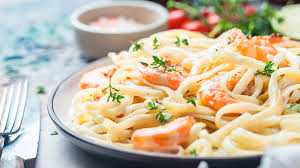

Pasta Al Fredo con camarones

Ingredientes
- 1 cucharada de mantequilla
- 1 cucharada de ajo, finamente picado
- 20 camarones, sin cáscara y limpio
- 2 tazas de crema para batir
- 1 paquete de pasta fetuccini, cocido y escurrido
- 1 cucharadita de sal
- 1 cucharadita de pimienta blanca, molida
- 250 gramos de queso manchego, rallado
- 2 cucharadas de perejil, finamente picado
Preparacion
- En una sartén calienta la mantequilla y fríe el ajo por 1 minuto.
- Agrega los camarones y cuece por 5 minutos. Incorpora la crema y calienta hasta que rompa el hervor.
- Añade el fettuccini, la sal y la pimienta, mezcla hasta integrar.
- Incorpora el queso y cuece por 3 minutos más o hasta que se derrita el queso.
- Decora con el perejil.
Inicio